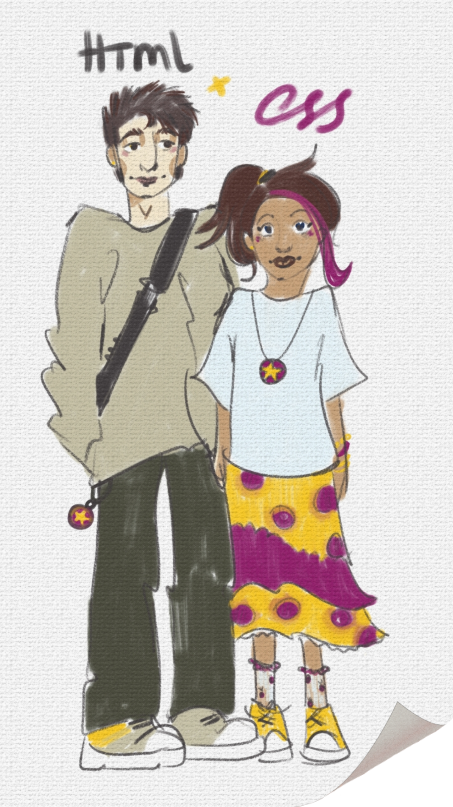
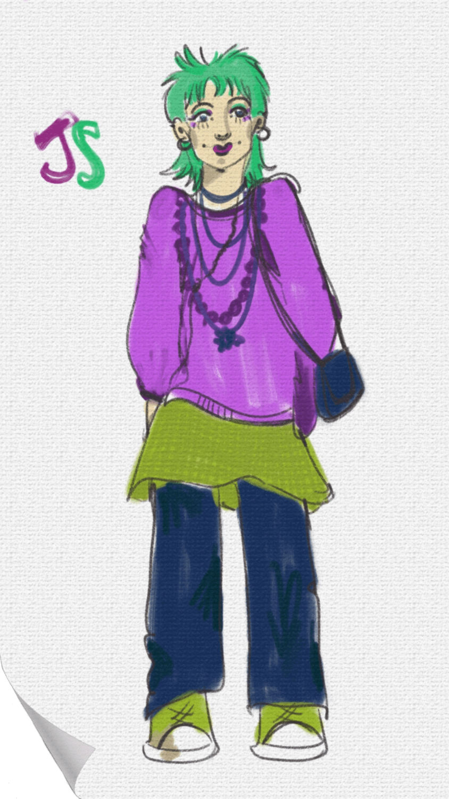
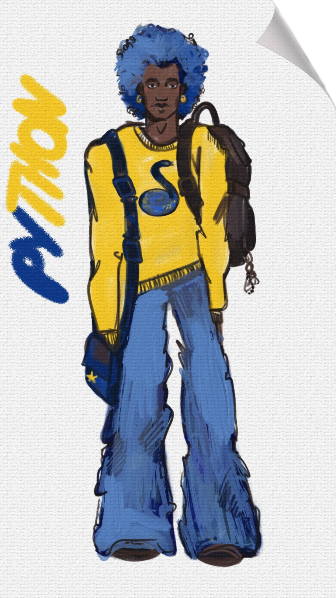
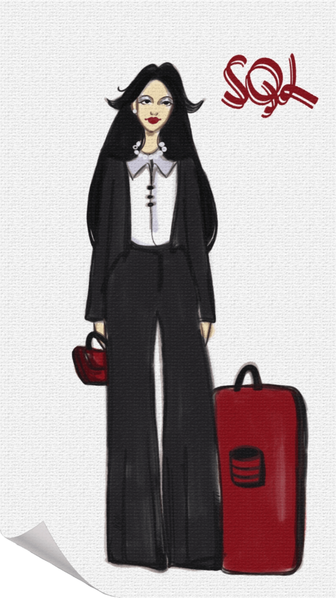
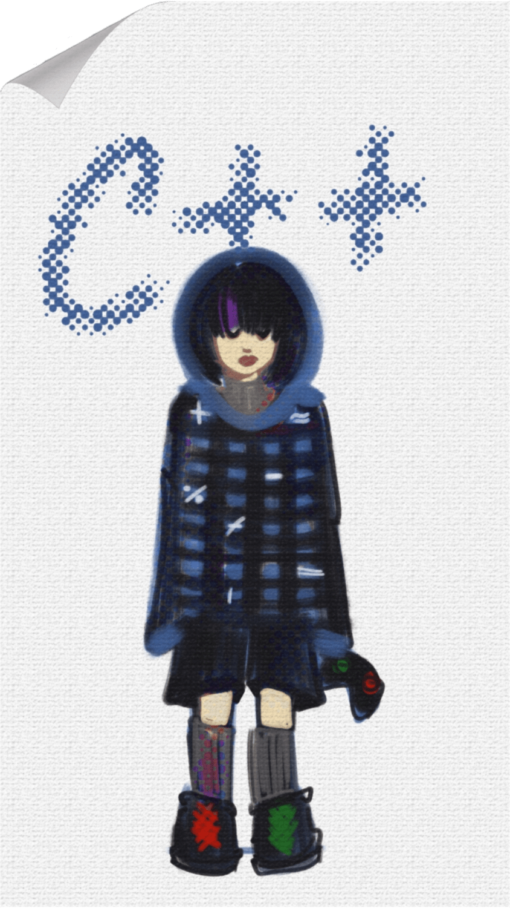

Was wären Programmiersprachen, wenn sie einfach nur vorbeigehende
Menschen wären?
What would coding languages be if they were just passing-by people?
Що було б, якби мови програмування були просто перехожими?
Hallo zusammen!
Personalisierung ist ein beliebtes Hobby von
Künstlern, Filmemachern und Designern. Es macht immer Spaß, sich seine Lieblingsspeisen, -farben usw. als
Charaktere vorzustellen. Um meine Liebe zur
Kunst und zum Programmieren zu verbinden, möchte ich euch
verschiedene Programmiersprachen (Und ja, ich habe auch die
Auszeichnungssprache HTML und die Stylesheet-Sprache CSS
einbezogen), die ich beim Programmieren ausprobiert habe, als Menschen vorstellen.
HTML & CSS
Ein klassisches High-School-Paar. HTML (sein Name ist
wahrscheinlich Henry oder so ähnlich:)), der Typ,
der seine Freizeit mit Lesen oder manchmal mit Gesprächen
über Philosophie verbringt, und CSS (ich glaube, ihr Name
ist Casey) mit ihrer Golden-Retriever-Persönlichkeit und
ihren ständig neuen Hobbys gleichen sich auf eine Art und
Weise aus, wie es kein anderes Paar kann.
Auch das ist typisch für sie:
Kein extrovertiertes Paar: Freitag ist der erste Tag von Staycation;
HTML kleidet sich nur in H&M (ironischerweise) oder Zara;
CSS kocht gerne und macht oft Chaos in der Küche, die
HTML dann aufräumen muss;
Sie planen, sich ein Haustier anzuschaffen, aber CSS
möchte eine Katze, während HTML einen Labrador
möchte.


JAVA SCRIPT
Die Person, deren Musik so laut ist, dass man sie durch ihre
Kopfhörer hören kann. Sie sind beliebt in den sozialen
Medien, ein echter Trendsetter, aber auch schwierig zu
kommunizieren - obwohl sie sehr witzig und interessant sind,
kühlen sie schnell ab und sind völlig
unbeständig.
Ebenfalls typisch für JS:
Sie färben sich alle drei Wochen die Haare (Ramona
Flowers-Referenz!);
Sie lieben Second-Hand-Läden und Schaufensterbummel;
Sie korrigieren dich (aggressiv), wenn du ein falsches Pronomen verwendest;
Sie sind mit CSS befreundet und konkurrieren mit Python.
PYTHON
Die Art von Mann, mit dem man sofort befreundet sein
möchte. Man kann sich sehr gut mit ihm unterhalten, er ist
ein meisterhafter Problemlöser und es macht einfach
Spaß, mit ihm zusammen zu sein. In meiner Welt heißt
er höchstwahrscheinlich James oder Brian und hat immer
seine gesamte Ausrüstung dabei und sieht dabei irgendwie
immer noch cool aus.
Auch typisch für Python:
Er ist mit fast allen befreundet und spricht mehrere Sprachen;
Minimalist und qualitätsorientiert: Wenn er einen schönen Pullover findet, wird er wahrscheinlich 6
weitere kaufen, um sie jeden Tag zu tragen;
Er hat eine perfekte Handschrift;
Er ist sehr offen und vertritt immer seine Meinung.


SQL
Ein echtes Beispiel für eine Chefin. Sie ist so sehr auf
Details fixiert, dass es anfangs überwältigend sein
kann, aber auch sehr professionell und zuverlässig. SQL
arbeitet ständig und übernimmt trotzdem immer noch
neue Aufgaben. Wenn du also mit ihr ausgehen möchtest,
wirst du wahrscheinlich um ihre Freizeit in 5
Wochen konkurrieren. *Es könnte allerdings schwierig sein,
ihr Interesse zu wecken, da sie nur mit Excel ausgeht.
Ebenfalls typisch für SQL:
Nicht sehr kreativ, aber unschlagbar in Mathe;
Hört zum Vergnügen Opern;
Sortiert alles nach Farben;
Reagiert schnell - sie antwortet wahrscheinlich sofort auf
Nachrichten, auch wenn sie sehr beschäftigt ist.
C++
Ein mystisches, ruhiges Mitglied der Gruppe. Die Figur, die mir
am ehesten einfällt, ist L aus Death Note - nur dass C++
eine Frau ist und Diabetes hat. Viele Leute haben Angst
vor ihr oder lästern über sie (wie auch über alle
anderen Mitglieder der C-Familie). Aber wenn man sie wirklich
kennen würde, würde man vielleicht herausfinden, dass
sie ein wirklich offenes, sensibles Mensch mit einem guten
Geschmack für Computerspiele ist? *Ich weiß nicht, ich
habe es noch nie so weit geschafft.
Ebenfalls typisch für C++:
Ist extrem wählerisch, was das Essen angeht;
Spielt nachts, schläft tagsüber und ernährt
sich von Energiegetränke;
Bei ihr zu Hause bietet sie dir Tiefkühlkost an, die du
selbst aufwärmen musst;
Bei der Teamarbeit macht sie die ganze Präsentation
selbst, weil sie sich sicher ist, dass es niemand besser
machen kann.

ABER WARTE... WER BIST DU?
Willst du wissen, welcher der sechs Charaktere dir am
ähnlichsten ist?
Dann mach den Test, antworte ehrlich und mach dich bereit,
deine Programmierpersönlichkeit kennenzulernen. Viel
Glück!🍀
Personification is a popular hobby amongst artists, directors and
designers. It's always fun to see what out favourite food, colors etc would
be as characters. To combine my interest for art and programming, I
introduce you to the various coding languages (And yes, I also
included markup language HTML and style sheet language CSS) I tried
as characters I designed mysef.
HTML & CSS
Classic college sweethearts. With HTML (his name would
probably be Henry or something) being basic classy man who
spends his time reading and occasionally engaging in
philosophical conversations and CSS (probably named Casey) being
the golden retriever of the couple and spending time taking up a
new creative hobby everyday they balance each other out like no
other couple can.
Also typical for this couple:
Not an extraverted pair: Friday is the first day of Staycation;
HTML only dresses in H&M (ironic) or Zara;
CSS loves to cook and often burns the whole kitchen which HTML
then has to clean up;
They plan on getting a pet, but CSS is more of a cat person
whereas HTML wants a Labrador.
JAVA SCRIPT
The one person whose music is so loud you hear it from their
headphones. Popular on social media, a trendsetter but also hard
to talk to because even though they are super funny and
interesting, they get bored easily and are also absolutely
unstable.
Also typical for JS:
Dye their hair every three weeks (Ramona Flowers reference!);
Love thrift stores and window-shopping;
Will (aggressively) correct you on people's pronouns;
Friends with CSS and also in competitive relationship with
Python.
PYTHON
The guy you imidiately want to befriend. Super easy to talk to,
master of problem solving and also just fun to be around. In my
world Python in probably named James or Brian and he's always
carryng all his hardware around bus somehow still manages to
look cool.
Also typical for Python:
Is friends with almost everyone and also multilingual;
Minimalistic and quality oriented: when he finds one good
pullover, he would probably buy 6 more of them to wear everyday;
Has perfect handwriting;
Very straight forward and would always speak his truth.
SQL
The ultimate girl boss. So detail oriented it may be
overwhelming at first, but also very professional and reliable.
SQL is always working and taking new tasks, to have a date with
her you would probably need to fight for a spot in 5 weeks from
now. *Although it would be complicated to get with her as she's
exclusively dating Excel.
Also typical for SQL:
Not really creative but unbeatable in math;
Listens to opera for fun;
Sorts everything by colors;
A fast responder - she would probably answer right away even
when having a huge amount of work.
C++
The mystical, quiet one of the group. The closest figure that
comes to mind in terms of personality is L from Death Note -
except C++ is a girl and diabetic. Lots of people are scared of
her or talking behind her back (the same goes to all of the
members of C family). But maybe if you actually got to know her
you'll find out shes a really helpful sweet person with a good
taste in computer games? *I don't know, I've never got this far.
Also typical for SQL:
A true definition of picky eater;
Games at night, sleeps at day and survives on energy drinks;
At her home she'll serve you frozen food you'll need to heat
up yourself;
At the group work she'll make the whole presentation herself
because she's sure noone can make it as good as her.
BUT WAIT A MINUTE... WHO ARE YOU?
You want to know which of the six people presented here
resembles you the most?
Then take a test, answer honesly and prepate to meet your
programming language-self. Have fun!🍀
Персоніфікація - це популярне хобі серед митців, режисерів та
дизайнерів. Ми любимо дивитись на те якими людьми були б види їжі,
кольори і так далі. Щоб поєднати мою любов до мистецтва
та програмування, я хочу познайомити вас з різними програмувальними
мовами (і так, я включаю до них і markup мову HTML разом з style sheet мовою CSS) які я пробувала у втіленні
персонажів, які я розробила
власноруч.
HTML & CSS
Класична парочка зі старшої школи. HTML (його скоріш за все звали
б Генрі або шось таке), хлопець, що проводить вільний
час читаючи або іноді теревенячи про філософію ,та CSS (думаю, її
б звали Кейсі) з її golden retriever-характером та постійними
новими хобі балансують одне одного так, як це не вдається жодній
іншій парі.
Також типово для них:
Не екстравертна пара: Вечори п'ятниці - початок вихідних вдома;
HTML вдягається лише в H&M (іронічно) або Zara;
CSS обожнює готувати і часто забруднює всю кухню, яку HTML
потім має прибирати;
Вони планують завести домашню тварину, але CSS хоче кота, тоді
як HTML - лабрадора.
JAVA SCRIPT
Та людина, музика якої настільки голосна, що ти чуєш її з їх
навушників. Популярні у соцмережах, справжні trendsetter, але також
складні у спілкуванні - адже попри те що вони дуже дотепні і
цікаві, вони швидко холонуть та є абсолютно нестабільними.
Також типово для них:
Фарбують волосся кожні три тижні (Ramona Flowers референс!);
Обожнюють секондхенди та window-shopping;
Будуть (агресивно) виправляти вас за неправильне використання займенників;
Дружать з CSS і змагаються з Python.
PYTHON
Той хлопець, з яким ти відразу хочеш подружитися. Надзвичайно
легкий у спілкуванні, майстер вирішування проблем, а також з ним
просто весело бути поруч. У моєму світі Python-а скоріш за все
звати Джеймс або Брайан і він завжди носить все своє обладнання
з собою і при уьому якимось чином все одно виглядає круто.
Також типово для Python:
Дружить майже з усіма і спілкується декількома мовами;
Мінімалістичний та орієнтований на якість: якщо він знайде
один хороший светр, то скоріш за все купить ще 6, щоб носити
щодня;
Має ідеальний почерк;
Дуже відвертий та завжди відстоює свою думку.
SQL
Справжній приклад girl boss. Настільки зосереджена на деталях,
що спочатку це може приголомшити, але також дуже професійна та
надійна. SQL завжди працює та бере на себе нові завдання, щоб
піти з нею на побачення ти скоріш за все будеш змагатися за її
вільну годину через 5 тижнів. *Хоча може бути складно її
зацікавити, адже вона зустрічається виключно з Excel.
Також типово для SQL:
Не дуже сильна креативно, проте непереможна в математиці;
Слухає оперу для задоволення;
Сортує все по кольорах;
Швидко відповідає - вона скоріш за все відповість на
повідомлення негайно, навіть при надзвичайному обсязі роботи.
C++
Містична, тиха дівчина в компанії. Найближчий персонаж за
характером, якого я згадала, це L зі Зошиту Смерті - тільки C++
дівчина та має діабет. Багато людей бояться її або пліткують (як
і про всіх інших членів сім'ї С). Але може якби ви справді
познайомилися з нею, ви б дізналися що вона справді вікрита
чуйна людина з гарним смаком у комп'ютерних іграх? *Я не знаю,
я ніколи не діставалася так далеко.
Також типово для C++:
Достобіса перебірлива в їжі;
Грає вночі, спить вдень і виживає на енергетиках;
В неї вдома вона запропонує тобі заморожену їжу, яку ти маєш
власноруч розігріти;
В командній роботі вона зробить усю презентацію сама, тому що
вона впевнена що ніхто не може зробити її краще.
АЛЕ СТРИВАЙ... ХТО ТИ?
Ти хочеш дізнатися хто з шести персонажів найбільш схожий на
тебе?
Тоді пройди тест, відповідай чесно і приготуйся до
зустрічі зі свою програмувальною особистістю. Щасти!🍀